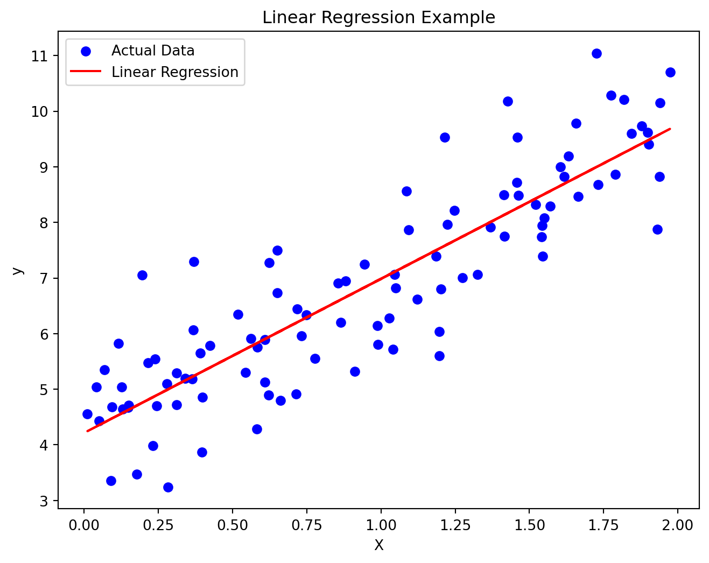

Linear Regression and Nonlinear Regression in Machine Learning
Author
Edward Xiong
Published
November 2, 2023
Introduction
Linear Regression:
Definition: Linear regression is a method used for modeling the linear relationship between a dependent variable and one or more independent variables. Simple linear regression involves one independent variable, while multiple linear regression involves multiple independent variables.
Equation: The equation for simple linear regression is: [y = mx + b], where (y) is the dependent variable, (x) is the independent variable, (m) is the slope, and (b) is the intercept.
Objective: The goal of linear regression is to find the best-fitting line that minimizes the error between predicted and observed values.
Nonlinear Regression:
Definition: Nonlinear regression is a regression analysis where the relationship between the dependent and independent variables is not linear but can be described by a nonlinear equation.
Equation: The equation for nonlinear regression can take various forms, such as quadratic, exponential, or logarithmic functions, for example: [y = a (b x)].
Objective: Similar to linear regression, the objective of nonlinear regression is to find the best-fitting curve that minimizes the error between predicted and observed values.
Relationship with Machine Learning:
Training Process: In machine learning, regression algorithms are used to learn models from data. This includes both linear and nonlinear regression, depending on the nature of the problem.
Prediction: After training, the model can be used to predict new data points. Linear regression is suitable for simple data models, while nonlinear regression is more appropriate for complex data models due to its ability to capture nonlinear relationships.
Feature Engineering: Feature selection, or choosing appropriate independent variables, is crucial in machine learning. The selection of features can impact the accuracy of regression models.
Linear Regression Example:
In this example, I generated a simple linear dataset where the dependent variable (y) has a linear relationship with the independent variable (x). I used the linear regression model from scikit-learn to fit the data, finding the best-fitting line. After fitting, I plotted the original data points along with the linear regression line and calculated the mean squared error.
Linear regression code and plots here:
import numpy as npimport matplotlib.pyplot as pltfrom sklearn.linear_model import LinearRegressionfrom sklearn.metrics import mean_squared_error# Linear Regression Example# Generate synthetic datanp.random.seed(42)X_linear =2* np.random.rand(100, 1)y_linear =4+3* X_linear + np.random.randn(100, 1)# Fit a linear regression modellinear_reg = LinearRegression()linear_reg.fit(X_linear, y_linear)# Make predictionsy_linear_pred = linear_reg.predict(X_linear)# Plot the data and the linear regression lineplt.figure(figsize=(8, 6))plt.scatter(X_linear, y_linear, color='blue', label='Actual Data')plt.plot(X_linear, y_linear_pred, color='red', label='Linear Regression')plt.title('Linear Regression Example')plt.xlabel('X')plt.ylabel('y')plt.legend()plt.show()# Print the coefficients and mean squared errorprint(f'Linear Regression Coefficients: {linear_reg.coef_[0][0]}')print(f'Mean Squared Error: {mean_squared_error(y_linear, y_linear_pred)}')

Linear Regression Coefficients: 2.770113386438484
Mean Squared Error: 0.8065845639670531
Nonlinear Regression Example:
In this example, I generated a nonlinear dataset where the relationship betIen the dependent variable (y) and the independent variable (x) follows a quadratic equation. I employed the linear regression model from scikit-learn but introduced a quadratic term (x^2) to capture the nonlinear relationship.
# Nonlinear Regression Example# Generate synthetic dataX_nonlinear =2* np.random.rand(100, 1)y_nonlinear =0.5* X_nonlinear**2+ X_nonlinear +2+ np.random.randn(100, 1)# Fit a nonlinear regression model (quadratic)X_nonlinear_squared = np.c_[X_nonlinear, X_nonlinear**2]quadratic_reg = LinearRegression()quadratic_reg.fit(X_nonlinear_squared, y_nonlinear)# Make predictionsy_nonlinear_pred = quadratic_reg.predict(X_nonlinear_squared)# Plot the data and the nonlinear regression curveplt.figure(figsize=(8, 6))plt.scatter(X_nonlinear, y_nonlinear, color='blue', label='Actual Data')plt.scatter(X_nonlinear, y_nonlinear_pred, color='red', label='Nonlinear Regression')plt.title('Nonlinear Regression Example')plt.xlabel('X')plt.ylabel('y')plt.legend()plt.show()# Print the coefficients and mean squared errorprint(f'Nonlinear Regression Coefficients: {quadratic_reg.coef_[0][1]}, {quadratic_reg.coef_[0][0]}')print(f'Mean Squared Error: {mean_squared_error(y_nonlinear, y_nonlinear_pred)}')
Nonlinear Regression Coefficients: 0.5139131449960704, 1.1110747256325477
Mean Squared Error: 0.7947997206268412
Linear regression and nonlinear regression are fundamental methods in machine learning for modeling and predicting relationships between variables. Both are part of supervised learning, where models learn from training data to make predictions.